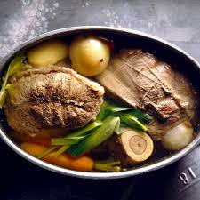

Pot-au-feu

When you find yourself cozying up by a fire with your feet in socks and a blanket over your lap, there’s no better time for a comforting meal of pot au feu to warm your belly.
Ingredients
- 1.25 lb beef shank with the bone
- 1/2 a large onion, diced
- 2 cloves garlic, minced
- 2 carrots, cut-up
- 2 leaves bay
- 2 small potatoes, peeled and cut into chunks
- 1 tbsp tomato paste
- teaspoons splash of lemon juice, a couple
Steps
-
Heat olive oil in a medium pot over medium heat. Sauté onion and garlic until translucent.
-
Add the beef (and bone) to the pot, along with enough water to cover the beef - about 3 cups of water. Add the salt and pepper. Cover the pot with a lid and bring the water to a boil, then reduce the heat to medium-low (erring on the side of low).
-
After 30 minutes, add the carrots and bay leaves.
-
After another hour, check the beef with a fork to check if it’s tender yet. If not, continue cooking and checking the beef in 10 minute increments.
-
Remove the bay leaves and serve the stew with some crusty French bread.